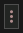

User guide
Recording actions.
An action is something you do on a channel. First of all Giada must be put in action recording mode by clicking on the record actions button  in the main transport or by pressing the enter key: now Giada will record any gesture coming from your mouse+keyboard and/or MIDI controllers.
in the main transport or by pressing the enter key: now Giada will record any gesture coming from your mouse+keyboard and/or MIDI controllers.
Actions for sample channels
On a sample channel you can record the following:
- key press;
- key release;
- sample kill.
Once Giada is in action recording mode, sample channels available and ready for receiving actions will turn red. When you're done, disable the action recording mode by clicking on the record actions button a second time: any sample channel with something recorded in it will have the read actions button enabled: if pressed, actions recorded for this channel will be reproduced.
If you need to remove all actions from a sample channel, click on the channel main button and select Clear actions from the drop-down menu, or tweak them more thoroughly with the Action Editor.
Actions for MIDI channels
On MIDI channels you can record any type of MIDI event supported by the Piano Roll Editor. First of all press the arm button , then enable the action recording mode and start your performance with your MIDI controller. When you're done, disable the action recording mode by clicking on the record actions button a second time.
If you need to remove all actions from a MIDI channel, click on the channel main button and select Clear actions from the drop-down menu, or tweak them more thoroughly with the Action Editor.
Live effects processor
You can also arm one or more MIDI channels without triggering the action recording mode. This way Giada turns into a live effects processor, driven by your MIDI notes received in input. This is very useful when you want to live play your virtual instruments through a MIDI controller.
Record on signal
Pressing the record actions button will also start the sequencer. Sometimes you want it to wait instead and start when the first action is received. This mode is called record on signal and you can enable it by clicking on the record on signal button  located on the main transport.